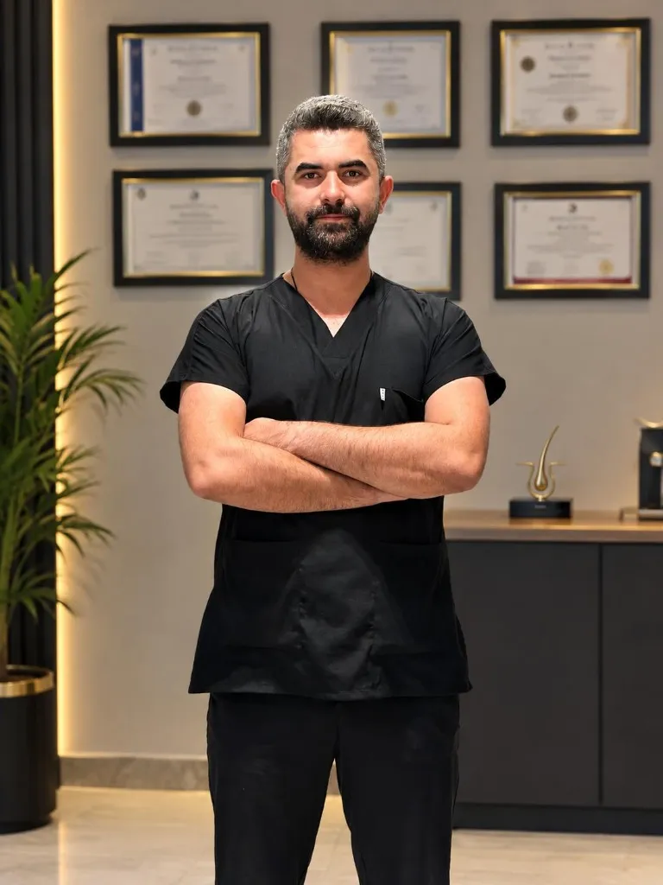

En çok tercih edilen
FUE Saç Ekimi Gaziantep
Gaziantep'te en popüler saç ekimi yöntemi. Saç köklerinin tek tek alınarak doğal çıkış yönüne uygun biçimde yerleştirildiği modern FUE tekniği ile doğal sonuç.
FUE ve Gold teknikleriyle kişiye özel planlama, doğal sonuç.
Yüzünüze ve saç yapınıza uygun, size özel bir süreç.

Kişiye özel analizTek tip plan yok
Uzman takibiYakın ve şeffaf takip
Doğal yön & açıYüzünüze uyumlu çizgi
Operasyon sonrasıPlanlı bakım desteği
Gaziantep'te sunduğumuz saç ekimi yöntemleri: FUE Saç Ekimi, Gold Saç Ekimi ve PRP uygulaması. Her yöntem herkes için doğru değildir. Donör alanınızı, dökülme tipinizi ve hedefinizi birlikte değerlendirir; size uygun yöntemi belirleriz.
Gaziantep'te en popüler saç ekimi yöntemi. Saç köklerinin tek tek alınarak doğal çıkış yönüne uygun biçimde yerleştirildiği modern FUE tekniği ile doğal sonuç.
Gaziantep'te özel uçlarla yapılan Gold Saç Ekimi. Doku hassasiyetini gözeten özel uçlarla kontrollü kanal ve greft planlaması ile maksimum başarı.
Gaziantep'te saç ekimi sonrası ve saç dökülmesi tedavisinde kullanılan PRP. Saç köklerini ve operasyon sonrası iyileşme sürecini destekleyen kişisel bakım protokolü.
İlk mesajınızdan operasyon sonrası kontrole kadar ne olacağını, neden yapıldığını ve sizi neyin beklediğini açıkça bilirsiniz.
Sürecinizi planlayalımSaç ve donör alan fotoğraflarınızla ilk değerlendirmeyi yaparız.
Saç çizgisi, greft ihtiyacı ve uygun yöntem birlikte netleşir.
Planlanan çizgi ve yoğunluk doğrultusunda kontrollü işlem yapılır.
Yıkama, iyileşme ve gelişim dönemleri düzenli olarak takip edilir.
Her sonuç; kişinin donör kapasitesine, saç yapısına ve iyileşme sürecine göre değişir.


* Görseller danışan onayıyla paylaşılmıştır. Sonuçlar kişiden kişiye farklılık gösterebilir.
 Gaziantep
Gaziantep
“Amacım yalnızca daha yoğun saç değil; aynaya baktığınızda yüzünüze yabancı gelmeyen bir sonuç üretmek.”
Her danışanın yüz oranı, mevcut saç yönü ve donör kapasitesi farklıdır. Bu yüzden planlamanın tamamını kişiye özel yapar, süreci ilk görüşmeden iyileşme dönemine kadar yakından takip ederim.
Fiyat, greft sayısı, uygulama günü ve iyileşme süreci hakkında en çok sorulan sorulara kısa ve açık yanıtlar.
Saç ekimi fiyatı; ihtiyaç duyulan greft sayısına, donör alanın durumuna, uygulanacak tekniğe ve seans planına göre değişir. Net fiyat için saç fotoğraflarıyla kişiye özel ön değerlendirme yapılır.
Fiyat sorunKalıcı veya genetik saç kaybı bulunan, donör alanı yeterli ve beklentileri gerçekçi kişiler saç ekimi için uygun olabilir. Saç kaybının nedeni ve donör kapasitesi kişiye özel değerlendirilmelidir.
Uygunluğunuzu sorunİşlem lokal anestezi altında planlanır. İlk uygulama sırasında kısa süreli batma, sonrasında ise geçici hassasiyet hissedilebilir; deneyim kişiden kişiye değişir.
Detaylı bilgi alınSüre; greft sayısına, ekim alanının büyüklüğüne ve kullanılan yönteme bağlıdır. Çoğu işlem aynı gün tamamlanır; geniş alanlarda birden fazla seans planlanabilir.
Süreç hakkında yazınGreft ihtiyacı açıklığın genişliği, hedeflenen yoğunluk, saç teli yapısı ve donör kapasitesine göre belirlenir. Fotoğraflı analiz yaklaşık plan verir; kesin sayı yüz yüze değerlendirmede netleşir.
Greft analizi isteyinFUE, saç köklerinin tek tek alınmasına dayanan yöntemdir. Gold uygulamasında kanal ve greft planlamasında özel uçlar kullanılır. Uygun yöntem saç yapısı, donör alan ve hedefe göre seçilir.
Yöntemleri sorunİlk haftalardaki geçici dökülmenin ardından yeni saçlar çoğunlukla dördüncü ay civarında görünmeye başlar. Sonucun belirginleşmesi genellikle 10–18 ay sürebilir.
Gelişim sürecini sorunDonör bölgeden alınan kökler genellikle dökülmeye daha dirençlidir. Ancak çevredeki mevcut saçlar zamanla seyrelmeye devam edebilir; kalıcılık ve yoğunluk kişisel koşullara bağlıdır.
Bize sorunİlk günlerde kızarıklık, kabuklanma, şişlik veya hassasiyet görülebilir. Greftlerin özellikle ilk iki hafta korunması önemlidir; günlük yaşama dönüş yapılan işe ve iyileşme hızına göre değişir.
İyileşmeyi sorunİlk yıkama ve bakım, kişiye verilen plana göre nazikçe yapılır. Darbe, yoğun terleme ve ağır egzersizden önerilen süre boyunca kaçınmak gerekir; net zamanlama iyileşmeye göre belirlenir.
Bakım planını sorunEvet, uygun saç kaybı tipi ve yeterli donör kapasitesi bulunan kadınlara da saç ekimi planlanabilir. Yaygın veya geçici dökülmelerde önce saç kaybının nedeni değerlendirilmelidir.
Ön değerlendirme isteyinTek başına yaş belirleyici değildir. Saç dökülmesinin seyri, donör alan, aile öyküsü ve ileride oluşabilecek kayıp birlikte değerlendirilerek uzun vadeli plan yapılır.
Yaş ve planlamayı sorunDonör alanın yoğunluğu ve saç tellerinin niteliği alınabilecek greft sayısını sınırlar. Zayıf donör alanda daha kontrollü yoğunluk, farklı bölge önceliği veya seans planı gerekebilir.
Donör analizi isteyinDoğal saç çizgisi; yüz oranı, yaş, mevcut saç yönü, açıklık ve donör kapasitesi birlikte değerlendirilerek tasarlanır. Tek tip veya gereğinden fazla düz bir çizgi yerine kişiye uyum hedeflenir.
Saç çizginizi konuşalımFotoğraflarınızı WhatsApp üzerinden iletin, size özel ön değerlendirmeyi ücretsiz yapalım.
WhatsApp’tan fotoğraf gönder